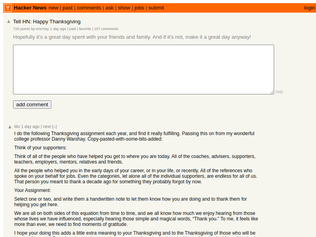
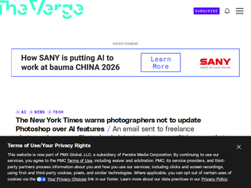
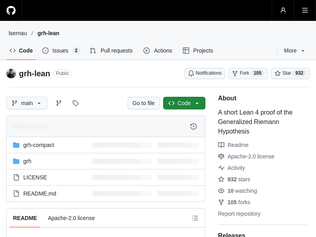
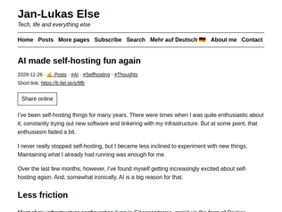
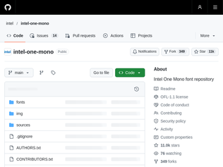
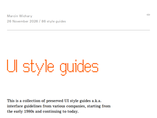
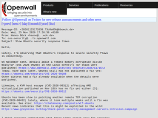
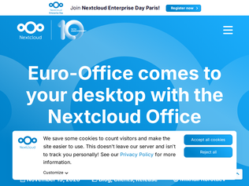
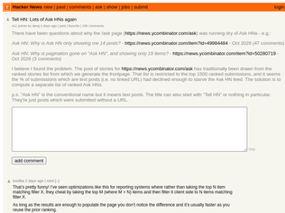

"I do the following Thanksgiving assignment each year, and find it really fulfilling. Passing this on from my wonderful college professor Danny Warshay. Copy-pasted-with-some-bits-added:Think of your supporters:Think of all of the people who have helped you get to where you are today. All of the coaches, advisers, supporters, teachers, employers, mentors, relatives and friends.All the people who helped you in the early days of your career, or in your life, or recently. All of the references who spoke on your behalf for jobs. Even the categories, let alone all of the individual supporters, are endless for all of us. That person you meant to thank a decade ago for something they probably forgot by now.Your Assignment:Select one or two, and write them a handwritten note to let them know how you are doing and to thank them for helping you get here.We are all on both sides of this equation from time to time, and we all know how much we enjoy hearing from those whose lives we have influenced, especially hearing those simple and magical words, “Thank you.” To me, it feels like more than ever, we need to find moments of gratitude.I hope your doing this adds a little extra meaning to your Thanksgiving and to the Thanksgiving of those who will be hearing from you! Based on the moving experiences many of you have shared with me that resulted from this simple gesture, I am confident that you will find this rewarding.For those of you who will be celebrating American Thanksgiving, I hope you enjoy what I know is a much-needed break. And for those of you who are not, I hope you will join me in a few moments of gratitude."
"Happy Thanksgiving HN!Grateful for the people who have made little tools and big tools and charming little projects, and insightful posts, and anything in between. Tech opens new opportunities like maps in broad dark space and the tinkerers light the way and show what’s newly possible.Also grateful to the gadgets and environments and people around tinkerers who take care of the meat-space parts to free up more time for research and insights.The world is full of distractions and it takes a special kind of person to ignore those and dig down into obscure API or fight through the last 20% to take a project to production. The latest numbers I read show AI has helped people who already publish to publish more, but I think those works may inspire more people to make new things as well.Here is a little game I made with the kids to be played with friends and family in person around the holidays. https://santawho.com Cheers to more giggles and less social media doom and gloom!"
"I'm thankful that prime factorization remains a hard problem (as far as we know) so that we can enjoy this day with family/friends/whatever."

"I work in the creative tools space.This is one of the biggest issues right now. It's nearly impossible to separate "this image was fully generated with AI" versus "I made a minor edit to the colors or did a cutout or improved the layout with AI" when the endpoint is an image.Especially for socials, if your brand is an authoritative source, getting hit with a dreaded "AI generated content" tag on instagram or facebook is a death blow to your credibility.Design tools are in a very hard space because of it. You want to make edits as seamless as possible for users, but your final result can't include any pixels from a generative model. It's a strange dance."
"I had a NYT photographer take my picture at my home earlier this year (for a story about Moltbook, oddly enough). At one point I asked if they could fix things up if I had a stain on my shirt and they said absolutely not - they present photographs as they were taken, with cropping and balancing applied but no edits beyond that.He did spend a bunch of time trying to find the best possible natural lighting for the shots he wanted.The photo at the top of https://www.nytimes.com/2026/02/02/technology/moltbook-ai-so... is my laptop, taken in my garden, after hunting around for the best spot that didn't have too much glare on the screen. You can see how dirty my screen is, too!Photography for a newspaper is photo journalism, and they take it seriously.(Thankfully I did not have a visible stain on my shirt.)"
"Vanishingly few people _enjoy_ encountering generative AI in images or sounds in the wild. The most likely positive sentiment you’ll find is some version of “I don’t have an opinion”, but enough people loathe it that willingly using it or being connected to it is a liability. NYT’s position is similar to Tidal banning it from their platform this past week. This linked article references the social stigma associated with using it, which anecdotally I’m seeing daily not only in the music spaces I occupy but in ultra-normy haunts: my neighborhood subreddit, Q/A events at my kid’s school, social media posts from accounts that are typically apolitical. The disconnect between various orgs’ and industries’ drive to integrate gen AI into professional creative software and consumer sentiment is fascinating and will be something we study for a long time."

"Nice! The more readable 300kloc proof even has a clear "known math" vs "new math" split and human-readable documentation all over the place. This should greatly aid with digesting it."
"From ~17M lines to just ~76k lines, a 99.56% reduction."
"Zulip discussion here: https://leanprover.zulipchat.com/#narrow/channel/658556-Riem..."

"> When implementing an idea becomes so easy, it’s perhaps more important than ever to occasionally ask myself whether it’s actually worth implementing in the first place.Wish I had this restraint. I’ve been vibing everything I can think of. It’s got to the point I made a small platform on top of k3s so that the agent can yolo deploy into a homeserver behind Tailscale. Once deployed it becomes natural selection for which vibes live and which die.Solo vibey self hosting llm usage - bliss.Corporate agentic engineering working with others - soul crushing."
"In some ways it's better, in some ways it's worse.It's certainly easier than ever to spin up a VPS/cloudflare proxy and deploy. Agents can pretty much do that end to end.The bigger issue is you're then accountable for keeping up with security. Previously that meant using fail2ban and running a system update every few months. Now it means patching within 24hrs of a CVE9+ dropping, which is happening at an accelerated rate.It got so bad during October I made https://firefighter.sh/ as a joke (a root-permissioned agent that continuously monitors for CVEs and patches your system live as soon as they drop - it's a security nightmare given the nondeterministic aspect of AI), but I'm actually starting to come around to the idea for my non-critical servers."
"Yes, I understand you very well. I can now experiment with server related tasks wich I previously couldnt undertake due to a lack of time or energy much more easily and comfortably."

"> Identifying the typographically underserved low-vision developer audience…Very strong recommendation for [Atkinson Hyperlegible Mono](https://www.brailleinstitute.org/freefont/) (and Next for that matter) which is easily the most legible font I’ve ever used. The Atkinson Hyperlegible family is an incredible OSS font (with source files available!) that IMO doesn’t get enough attention."
"Fonts is an ever welcome topic of discussion and exchange of opinions.Me, I've got to admit that I have worked on many different computer systems since the 80s, with many different fonts that for a long time you could not even change or customize. And you know what, it all worked. It was fine. And thus I really don't care too much what font I'm using - usually the preinstalled one.Sure, the small l might look like a 1, the O like a 0. But in all these years I've been using a computer, of which a great percentage was spend in an editor writing code, these things - for me! - have never once been an issue.That doesn't mean you have to be like me! I know that fonts are a great thing to get nerd sniped over. But for me, personally, I consider it mostly bikeshedding."
"I liked the way this font looks in the preview image in this repository, but after discovering Iosevka [0] I can't go back to "regular" monospaced fonts. At first I was only able to use the 548-width version and it already improved code reading ergonomics/comfort, but after ~1 month out of curiosity I switched to the normal/500 width version and I was surprised how "normal" it looked to my eyes while being even more space-efficient. After a few days I got used to it even more. As of now it's my #1 programming font.[0] https://github.com/be5invis/Iosevka"
"I’ve had OpenAI and Anthropic accounts continuously for a long time, with a sampling of others rotating in and out.The back-and-forth between which provider is more generous has been interesting to follow because the balance has been swinging back and forth. Not long ago I was having fun throwing OpenAI tokens at a side project because they felt limitless between the allowances and the constant flow of resets. Then Opus 5.5 came along and gave even more usage without any reset shenanigans to try to stay ahead of. OpenAI responded by reducing their allowances, and now the reset party seems to have stopped as well.Now they’re sending us vague emails about limits being adjusted downward again, citing a billing error? The original email was so vague that they had to send a clarification because it didn’t have enough information to tell if we were going to be retroactively penalized or if it only applied going forward.This comes at the same time as they’re rolling out a change that makes chat quota subtract from your coding quota, which removes one of the last remaining big selling points of an OpenAI subscription in a world where Opus 5.5 exists.I would love to have some insights into what’s happening at OpenAI right now. From the outside it feels like something substantial changed in how they approach everything, but the weird part is how it’s coming at the worst possible time for them to be appearing like the lesser deal. Did they finally get the internal marching orders to turn the profitability knob up and ignore everything else?"
"Our limits have been artificially propped up by a "reset" economy that is coming to an end, ChatGPT web usage not counting against our balance (set to change), and now apparently [unintentional] artificially inflated limits.I don't think token subscription subsidization at the level we've become accustomed to lasts forever, so it's critically important we have a few more frontier level models (glad to see Gemini back in the arena, and I'll even cheer for Muse and Grok if it'll provide more competition)."
"Sorry for the off-topic question, but does anyone else find OpenAI's models horribly overengineering stuff? I find myself saying "WTF are you doing, abort everything" with all of Astra, Luna and Sol, both 5.x and 6.x era. Is this ame problem?"

"For some reason I did not expect this from the first page of the Amiga style guide from 1991:"English doesn’t have a good, genderless, third-person pronoun and it’s very awkward to avoid using one. So instead of just using the masculine throughout or alternating chapters with masculine / feminine / masculine /etc., we’ve changed genders at random. That way it best mimics reality where some of your users will be men and others will be women.If you find yourself being startled by this shift - maybe you needed to be. No business can afford to alienate a customer by being unaware of her.""
"I so much enjoy the old graphical user interfaces. They had very little room and often not many colors available. The result was very simple, but easy to understand and use interfaces.Personally I think designs should be simple (no gloss, gradients, blurry shadows) not extreme in colors nor shapes."
"Strangely missing are the Windows User Experience Interaction Guidelines for Windows 7 and Windows Vista.Still online: https://learn.microsoft.com/en-us/windows/win32/uxguide/desi...PDF version: https://studfile.net/preview/1758756/Older Vista version: https://archive.org/details/UXGuide/page/158/mode/2up"

"From the stable kernel maintainer (2025):> Along the lines of the huge number of recorded CVEs, you HAVE to take all of the stable/LTS releases in order to have a secure and stable system. If you attempt to cherry-pick random patches you will NOT fix all of the known, and unknown, problems, but rather you will end up with a potentially more insecure system, and one that contains known bugs. Reliance on an "enterprise" distribution to provide this for your systems is up to you, discuss it with them as to how they achieve this result as this is what you are paying for. If you aren't paying for it, just use Debian, they know what they are doing and track the stable kernels and have a larger installed base than any other Linux distro.https://social.kernel.org/objects/56a20bd3-d2c3-4262-8388-3a..."
"At $DAYJOB we’ve moved all of our server images to Debian from Ubuntu because of this. It’s absolutely unacceptable for one of the most widely-used Linux distros to have slow security response times in 2026."
"Please keep in mind that most major distros spend a lot of time on regression testing.While distros like Debian do an absolutely fantastic job, they have little resources for QA and regressions like this can happen: https://bugs.debian.org/cgi-bin/bugreport.cgi?bug=1154101"

"Beware that this is a controversial fork of ONLYOFFICE.Also, being developed by a consortium of companies doesn't sound too reassuring, seems bureaucratic..."
"Seems to be an embedded Chromium Embedded Framework app? (For the interface, the core is C++). So I was ready to dislike it BUT I've trying out the "Excel" and it feels and looks superb.I've also been test driving the vibe-coded GridCraft (by the PhotoCraft people) but this feels even better?I've been desperate to get away from OpenOffice and now 2 options come along at once."
"The ONLYOFFICE release 10.0.0 (12 October 2026) https://github.com/ONLYOFFICE/DocumentServer/blob/master/CHA... lists 46 security related fixes.At first sight it seems some (or all) of them are missing here: https://github.com/Euro-Office/DocumentServer/blob/main/CHAN..."

"That’s pretty funny! I’ve seen optimizations like this for reporting systems where rather than taking the top N item matching filter X, they cheat by taking the top M (where M > N) items and then filter it client side to N items matching filter X.As long as the results are enough to populate the page you don’t notice the difference and it’s usually faster as you reuse the prior ranking.But if not, you get this exact situation."
"On the topic of HN bugs:When you click "hide" on a post on the homepage, it loads a new 30th entry for the page. This works great on page 1, but on other pages it always loads entry "30" instead of "60" for page 2 or "90" for page 3. So if I'm on page 2 and hide 3 posts, then the bottom of the page is 58/59/60 and all 3 are duplicates of what should be 30 on page 1."
"While we're on the subject of feed curation...There appears to be a new behavior for Show HNs where they are often both [flagged] [dead] immediately after posting (e.g. it shows 0 minutes posted; too fast for humans to naturally flag it)Is this behavior expected?"

Tell HN: Happy Thanksgiving
"I do the following Thanksgiving assignment each year, and find it really fulfilling. Passing this on from my wonderful college professor Danny Warshay. Copy-pasted-with-some-bits-added:Think of your supporters:Think of all of the people who have helped you get to where you are today. All of the coaches, advisers, supporters, teachers, employers, mentors, relatives and friends.All the people who helped you in the early days of your career, or in your life, or recently. All of the references who spoke on your behalf for jobs. Even the categories, let alone all of the individual supporters, are endless for all of us. That person you meant to thank a decade ago for something they probably forgot by now.Your Assignment:Select one or two, and write them a handwritten note to let them know how you are doing and to thank them for helping you get here.We are all on both sides of this equation from time to time, and we all know how much we enjoy hearing from those whose lives we have influenced, especially hearing those simple and magical words, “Thank you.” To me, it feels like more than ever, we need to find moments of gratitude.I hope your doing this adds a little extra meaning to your Thanksgiving and to the Thanksgiving of those who will be hearing from you! Based on the moving experiences many of you have shared with me that resulted from this simple gesture, I am confident that you will find this rewarding.For those of you who will be celebrating American Thanksgiving, I hope you enjoy what I know is a much-needed break. And for those of you who are not, I hope you will join me in a few moments of gratitude."
"Happy Thanksgiving HN!Grateful for the people who have made little tools and big tools and charming little projects, and insightful posts, and anything in between. Tech opens new opportunities like maps in broad dark space and the tinkerers light the way and show what’s newly possible.Also grateful to the gadgets and environments and people around tinkerers who take care of the meat-space parts to free up more time for research and insights.The world is full of distractions and it takes a special kind of person to ignore those and dig down into obscure API or fight through the last 20% to take a project to production. The latest numbers I read show AI has helped people who already publish to publish more, but I think those works may inspire more people to make new things as well.Here is a little game I made with the kids to be played with friends and family in person around the holidays. https://santawho.com Cheers to more giggles and less social media doom and gloom!"
"I'm thankful that prime factorization remains a hard problem (as far as we know) so that we can enjoy this day with family/friends/whatever."